INTRODUCTION - PANELS AND FRAME
- Path
- Descriptions > 72 PANELS AND FRAMES > INTRODUCTION - PANELS AND FRAME
- Kind
- system description
- Applies to
- all engines; all production periods
- Interactive page
- https://sloeber94.github.io/elrnDB/#/939003552
Applies to: all engines; all production periods
Introduction
The topics are covered with particular attention to the new technical features required for passing the various tests introduced by new legislation. The descriptions and operating information provided are limited to a discussion of principles, rules and minimum precautions.
For information on repair methods and vehicle specifications, see the specific sections on repair procedures.
Aerodynamics
The styling of the new car is designed to reflect great personality and originality and improves on the attributes of roominess, practicality and sturdiness achieved by previous models.
The front, sides, rear and underbody were developed with particular attention to aerodynamics and allow outstanding drag coefficient values. The following values are an example:
Version with basic specification:
- drag coefficient CX = 0.32
- drag coefficient for area CX x S = 0.7574
These values are the result of road testing and measurements carried out in a wind tunnel.
These results contribute to the noiselessness of the vehicle and significantly reduce wind noise. They also allow fuel saving.
Safety
The main aim of car manufacturers is definitely the total safety of the driver and passengers.
To adapt the vehicle to highly demanding European and international market regulations, the new vehicle was designed with great attention to detail in order to achieve an optimum response in all situations.
Passive safety
A vehicle's passive safety is the collection of technical and product solutions designed to protect the occupants of the vehicle in the case of an accident.
The search for excellent performance has led to the introduction of design and construction solutions on the new vehicle that represent the state of the art in the field of passive safety.
The occupant protection system
The occupant protection system is composed of the following features fitted as standard on all trim levels:
- the front protection system includes the electronic control unit, dual activation stage twin (driver and passenger) front air bags, driver and passenger knee bag, front seat belts with pretensioned buckle and load limiter in the reel, a control unit and safety sensor on the front tunnel, a additional decentralised impact detection sensor in the headlamp carrier crossmember, seat belt unfastened sensors for the front seats, occupant presence sensor on the passenger seat and passenger air bag manual disabling switch.
- the chest/pelvic side protection system comprises two side bags in the front seats and two head/window bags along the roof side members
- 3 point rear seat belts for all 3 rear seats.
For more information on the Air Bag system
See descriptions 5580C AIR BAG SYSTEM
The solutions adopted in the design and manufacture of the seats, the dashboard and the interior panels and fittings increase the degree of passive safety of the vehicle.
For more information on these topics, refer to the specific chapters.
Resistance to impacts
All the features relating to Passive Safety have been developed in order to offer the maximum protection for the occupant in all possible impact situations at high speed:
- frontal impact
- rear impact
- side impact
- roll over
The behaviour of the bodyshell in crash tests has more than adequately satisfied the international safety standards.
Pedestrian protection
The style of the front part of the vehicle has been developed taking into account the protection of pedestrians as required by the most recent international legislation. The shapes are smooth and rounded and there are no unsafe projections for the safety of pedestrians. The ample surface area of the bonnet minimizes the risk of contact between pedestrian's heads and the rigid front pillars.
The most rigid components are located inside the engine compartment a suitable distance away from the bonnet in order to allow the bonnet skin to absorb the energy forces of the impact with the pedestrian's head.
Protection against fire
At the end of the 90's with the introduction of new European regulations regarding crash tests and with the introduction of fuel injection systems, the need to seriously redefine the design of the bodyshell and the layout of the various systems on the vehicle. The entire vehicle, from the bodyshell to the various components is therefore subject to the rigorous observance of the most recent and most stringent internal regulations regarding protection against fire.
Fuel system and evaporation control system and fps
Special care has been taken over the layout to locate potentially critical devices outside of the impact area, also the routing of the various systems, which has been carefully considered from the earliest stages, is very well protected in order to reduce potentially critical situations.
- The underbody fuel and evaporation control pipes are arranged parallel to the extremely strong underfloor side member. There is also a specific plastic duct to protect against accidental contact (stone chipping, etc.). In the engine compartment on the right hand side, metal sections of pipe have been used to prevent any fuel leaks in the case of contact during an impact.
- The petrol versions have a returnless fuel system which allows the fuel return pipe to the tank to be dispensed with reducing the risk of leaks.
- The evaporation control system active charcoal filter is located in the left rear wheel arch, in other words in an area that is not vulnerable and is near the tank.
- There is an inertia switch on the petrol and diesel versions (FPS - Fire Prevention System) that immediately switches off the engine a few milliseconds after the start of the impact.
- The plastic tank exceeds not only national but also foreign legal requirements. It is located in an area protected in the case of a collision and has the capacity to withstand any deformation without the risk of fuel leaks. Also, being plastic, there is no risk of explosion if the vehicle is on fire.
Engine compartment electrical equipment
- The positive battery terminal is not facing the direction of travel and the risk of short circuiting in the case of a frontal impact is thereby greatly reduced.
- The main section of the high power positive leads is directly on the positive battery pole in a maxi fuse box. This solution prevents the presence of sections of cable not protected by fuses and therefore exposed to accidental short circuiting. There is also a series of automatic sectioning devices operated by the inertia switch (FPS) which, in the initial milliseconds following a serious impact, detach the battery connection to the high power leads averting the risk of a short circuit.
- All the main cables are electrically insulated and fitted inside corrugated covers for mechanical protection against the possible risk of abrasion.
- The electrical insulation of the starter motor/battery power lead is made from a material with good resistance to abrasion and cutting with the routing using special fastenings and protected by metal brackets.
Passenger compartment interior electrical equipment
- All the cables are protected by fuses located in the body computer control unit on the left side of the dashboard.
- The routing of all the cables has been designed to prevent pinching during fitting or interference during operation and to reduce the potential risk of short circuiting to a minimum.
Exhaust pipe
- All the components that could suffer from radiated heat (reduced by the presence of a special shield) from the exhaust system have been located a suitable distance away.
- Large metal shields on the underbody make it possible to protect the surrounding parts from the heat produced by the exhaust pipe (tank, handbrake cables, flexible supports).
The structure of the vehicle
The chassis
The chassis represents a radial structural change compared with the previous chassis of the 156.
The chassis contains several ets of longitudinal box section structural elements, connected to one another by transverse elements and finished off by dashboard and floor panels.
The floor panel box sections are integrated with the bodyshell elements, finishing off a perfectly integrated and solid structure.
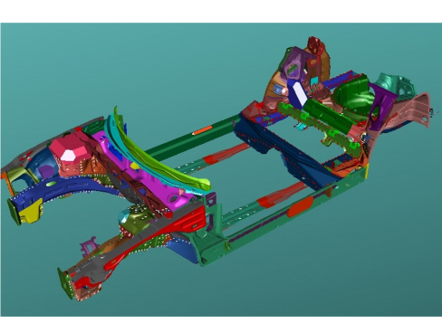
The absorption of energy from a frontal or rear impact is mainly carried out along the two load lines consisting of the front struts, engine mounting frame, rear struts, underfloor side members and side members. The continuity, for the entire length of the vehicle, of these three parts guarantees gradual defornation in accordance with the severity of the impact. In addition, the connection between the struts and the engine suspension frame contributes in distributing the load towards the deformed obstacle in the optimum way.
The high resistance material and differentiated thicknesses of the front and rear side members are designed to support the forces developed by the front and rear crossmembers in the case of impacts at low speed without damage and, at the same time, to allow the absorption of all the impact energy in impacts at high speed without the passenger compartment being deformed.
There is a box section crossmember at the front with controlled deformation collapsible struts (crash box), whilst there is a very thick crossmember at the rear with a collapsible open section.
Both crossmembers are made from high resistance steel and are bolted onto the floor panel in order to facilitate servicing operations.
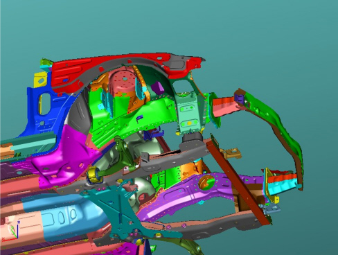
Above the engine and in front of the H nodes there are a further two struts that intercept the stresses arriving from the top part of the vehicle through their deformation, especially when the vehicle crashes into the back of a lorry.
There is a special box structure at the rear, immediately behind the rear seat backrest, constituting an extremely important structural element for the torsional strength of the bodyshell.

The galvanizing treatment on both sides of all the chassis and bodywork structural elements and the use in some areas of increased galvanizing thickness panels, prevents the risk of rust, both structural and aesthetic and therefore guarantees the maintenance of structural performance for the entire life of the vehicle.
The bodywork
The bodyshell basically features three very important technical-technological factors: the use of high performance materials, the use of multi-thickness panels and the use of laser welding.
The outer bodyshell, also to a great extent made from high resistance material (58% of the weight of the entire bodyshell is made from high resistance steel, whilst a further 7% of the weight of the entire bodyshell involves the use of dual-phase steel), represents a structure featuring numerous longitudinal, lateral and transverse box sections strengthened by internal reinforcement and featuring highly resistant sections.
Dual-phase steel belongs to a family of high resistance steel which, on account of its metallurgical properties and chemical composition, features very good mechanical resistance properties (ferrite phase - very high yield and breaking loads) and excellent moulding properties (martensite phase - drawing depth) and are therefore particularly suitable for use on complex geometry panels which the bodyshell elements often are.
Like for the chassis previously, the bodyshell has also made use of tailored-blank technology, in other words sheets of multi-thickness laser welded panels for the constructions of the most important structural elements, such as the side frame and the roof rib. Multi-thickness panels, compared with more traditional configurations where the elements are one single thickness with added local reinforcements, allows important improvements in terms of weight and technological sheel-metal working process (reduction in the number of weld spots).
Laser seam welding, used both for indefinite panels (in the tailored-blanks mentioned above) and for finished elements (join between the roof outer cover and the side panels), which are then connected to one another without a continuity solution (in place of traditional spot welding) makes it possible to produce high quality, good performance structural joins.
All these elements give the structure an extremely good torsional-bending strength and contribute to supporting the forces created by the centre side members in longitudinal impacts, whilst they play an important role in side impacts.
An important contribution made by the good torsional strength is the elimination of creaking due to the torsion of the bodyshell and the interior and exterior fittings in operating conditions.
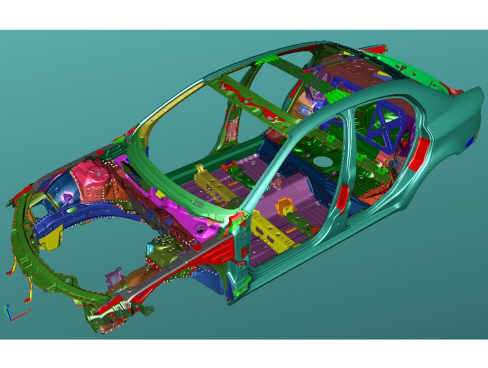
Torsional rigidity
Diagram showing deformation due to torsion
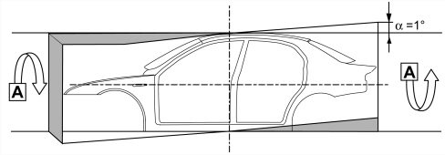
Torsional rigidity values
Bodyshell with windows and bulkhead: 175400 daNm/rad
Bending strength
Diagram showing deformation due to bending.
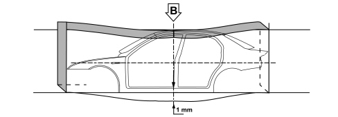
Bending strength values
Bodyshell with windows and bulkhead: 1200 daN/mm.
The doors
The front and rear side doors are secured to the bodyshell by hinges and locks well above the minimum legislative standards and make an important contribution in both frontal and side impacts. A double high resistance steel lengthwise reinforcement along the waistline stabilizes the entire structure of the door and contributes to the non-deformability of the passenger compartment in a frontal impact.
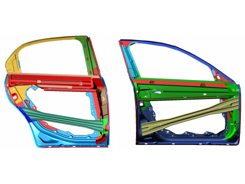
Experiments have confirmed that the doors do not open accidentally in various types of impacts, at the same time guaranteeing easy opening after an impact.
Behaviour in terms of side impacts has improved with suitably sized ultra high resistant dual-phase steel crossmembers on all 4 doors.
The bonnet
Various safety measures have been introduced. There are preset collapse lines which, together with specific retaining hooks on the hinges, prevent it penetrating the windscreen in the case of an impact.
Windscreen and rearscreen
The fixed windows are a further safety feature.
To increase the vehicle safety level, the windscreen is in laminated glass. This solution prevents the glass from shattering if struck by stones or gravel to assure visibility at all times and above all to offer a high level of protection if struck with the head.
The windscreen and the rearscreen are bonded to the bodyshell, thereby contributing to increasing the structural strength of the vehicle: the seals flush with the bodywork contribute to reducing the noise due to oncoming air (wind noise).
The bumpers
They have been designed to provide excellent protection in the case of minor impacts.
The rear crossmembers right behind the outer shell of both bumpers and the absorbers (for the rear with collapsible cell inserts) positioned between the bumper shell and the crossmember, limit damage in impacts at up to 4 km/h.
The underdashboard crossmember
The crossmember made from mangnesium to make it light and integrate with the other sub-systems, is located between the two front pillars underneath the dashboard with the shape reproducing the entire upper dashboard. It guarantees a sturdy connection not only between the pillars but also with the floor to which it is connected by means of two struts. This configuration contributes significantly to ensuring the non-deformability of the entire front area of the passenger compartment during head-on and side impacts. Because it also acts as a support structure for the steering column, it prevents the steering wheel moving back and upwards during all types of frontal impact. The crossmember under the dashboard also has the function of contributing to the release of the pedals; in effect, an appropriate size bracket is securely fastened to the crossmember by the releasable pedal assembly triggers that is positioned in such a way as to release the brake and clutch pedals if they are retracted; this cancels out the thrust of the pedals on the occupants tibia and protects the survival space.
New technology
Laser
For the first time on a Group vehicle the roof has been secured to the bodyshell by laser sources for a total of 2.8 m of the vehicle. This means perfect matching along the entire length of the roof and, above all, the possibility of using increased resistance sections (lasers work on one side of the panel only) allowing improved performance.
Laser sealing diagram
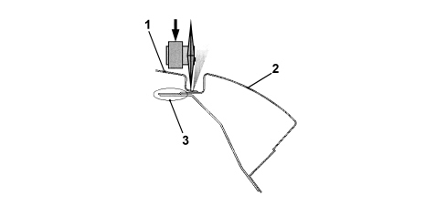
1. Roof
2. Outer side
3. Panel assembly join
Laser technology (Comau-Agliaser patent) is also used in the preparation of the doors which benefit from the same advantages with more extended and more homogenous panels.
Medium frequency welding
Medium frequency welding has been used extensively for the assembly of the bodyshell allowing the use of more preformed materials and very thick panels. In this case too this is the first application on a Group model.
Automation
The body panel assembly line is highly automated with 127 robots which allow 81% of the welding to be carried out completely automatically thereby guaranteeing constantly high quality.
Geometry
Along the bodyshell assembly line, in order to guarantee constant quality over a period of time, there are 2 opto-electronic measuring stations that allow 100% measurement of production at 84 "critical" points (with constant checks guaranteed) and a new measuring station checking 490 "key" points sampled daily.
Possibility of damage and repair of impacts at low speed
Special attention has been paid to impacts at low speed to limit damage to the front section of the vehicle, thereby preventing costly repairs to the chassis and cooling module.
The chassis structural elements (struts) have been designed in such a way that they are not deformed in this type of impact in spite of the forces exchanged with the parts in front subjected to the impact against the obstacle.
There is a strong crossmember behind the front bumper made from a high resistance material that is capable of absorbing all the typical impact energy in a low speed accident thereby preventing damage to the most expensive components inside the engine compartment.
The crossmember is bolted to the front side members to facilitate the operations of removing and refitting. During the first stages of the impact the front crossmember starts to deform absorbing a considerable amount of energy and moving backwards parallel to itself without collapse instability that could damage the radiant pack behind; as the situation progresses, the deformation is transmitted to the absorption elements (crash box), in other words the longitudinal box sections that produce controlled high absorption efficiency controlled folding.
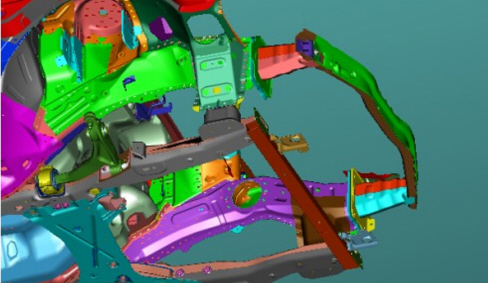
The cooling module has been located a safe distance from the actual crossmember and from the engine layout so that in the case of low speed impacts there is space for it to move backwards without being involved in the damage. The new feature is that the cooling module is supported by the headlamp carrier crossmember from above and the engine frame crossmember from below by means of releasable fastenings that allow it to move backwards without deforming the attachment feet in the case of an impact, in effect the pressure transmitted by the duct to the strong side parts of the reservoirs in the initial moments is sufficient to release the fastenings. The release can be restored without special operations and does NOT require repair activities. In this way the labour time and therefore cost is considerably lower than conventional solutions.
The vehicle is also fitted with a collapsible system for the fastenings securing the front headlamps to the headlamp carrier crossmember. Following an impact the fastenings yield and the entire headlamp casing retracts without any damage to it. To restore the vehicle simply tighten the new fastening tabs to the headlamp casing.

The rear part of the vehicle is similar to the front: in this case too there is an extremely strong crossmember made from a ultra resistant material which contains highly efficient impact absorbers near the rear side members. In thise case the absorption elements are the only components to replace in the case of low speed shunts.
Sound insulation
General specifications
To meet EEC standards, the vehicle's exterior noise levels must be lower than 74 decibels.
Driving comfort and living conditions inside the passenger compartment have been improved by:
- optimising the body through a thorough examination of all parts subject to noise, which have been made stiffer and fastened more securely;
- choosing contact materials with great care;
- by improving the insulation against noise transmitted from the road surface, from mechanical parts and from the suspension;
- by taking great care over parts assembly, aerodynamics and all parts with shapes that affect acoustic comfort, such as door handles, door mirrors, bumpers and other outlines;
- by fitting new generation engines with high-tech features designed to improve acoustic/vibrational factors;
- by fitting a new barycentric engine mounting.
Another area of improvement has been the passenger compartment insulation. The following action has been taken:
- highly efficient sound-absorbent materials with optmum thickness and layout on the vehicle;
- fitting of a sound-absorbent undershield in the lower part of the engine compartment for acoustic insulation;
- elimination of acoustic holes (areas where sound can pass between the engine compartment and passenger compartment) by fitting double-lipped seals, thicker rubber plugs;
- by fitting the various sound-insulation parts together more tightly to avoid uncovered areas;
- extensive use of sound-absorbent seals;
- sound-proofed coating of panels with heat-bonded materials applied before painting;
- lining of the bulkhead and front steps to remove the sensation of the engine's presence;
- application of heat-expanding materials inside the box sections prior to painting to reduce noise transmission. During body cataphoresis process, the volume of these materials expands ten times to fill the box section effectively.
- lining the boot compartment appropriately to reduce rolling noise;
- carefully examining the fitting and size of parts liable to squeak such as the facia, heater and seats: the anchorage and fastening points have been reinforced.
To maintain the high level of acoustic comfort achieved, the specifications adopted during manufacture must be restored exactly in the event of repair.
PROTECTION OF THE BODYSHELL
Introduction
The vehicle body is designed to withstand for many years any environmental attack to the interior, not visible but potential subject to corrosion, and exterior, particularly subject to damage that may affect the exerior appearance of the vehicle.
In order to achieve these objectives specific activities have been carried out during all the development stages of the model including both the design and the production process using the most up to date and innovative methods (FMEA, Robust Design).
These instruments have been used to apply the guidelines for special anti-corrosion standards that ensure completely accessibility of the bodyshell to the protection and painting processes (in particular the rust prevention cataphoretic painting process) and the correct shape of each element designed to prevent any possible build up of dampness in the box sections and allow the perfect sealing of all the panel joins.
Galvanising
The bodyshell basic protection level has been defined in parallel to the design and process criteria: 85% of the bodyshell is made up of panels galvanized on both sides.
In particular, all the structural elements of the chassis are 100% galvanized.
Out of these, the structures defined as safety structures (suspension mountings, seat belt reinforcements, ect.) are made from high thickness zinc galvanized panels (20 microns compared with 8 for standard galvanized panels).
The bodywork is made totally from panels galvanized on both sides for the moving parts (covers and frames) and for all the elements of the fixed outer panels, including those that make up the door stops, visible with the doors open.
All the anti-corrosion provision has been subjected to laboratory tests and checked on the vehicle with FOR-LIFE tests which were carried out in special test areas that reproduce the most stringent conditions of the northern European market.
The total galvanizing of the outer bodyshell makes it possible, together with the protection package provided by the painting process, to produce the 3 year goal without cosmetic corrosion points.
The protection package provided by galvanized panels and cataphoresis for all the structures makes it possible to exceed the 8 year vehicle life without panel perforation in the most harsh climates of northern Europe and to comply with the European legislation regarding safety points (10 years with structural weaknesses).
Painting
A new painting system has been launched for the production of the vehicle designed and produced using the most recent technological innovations available on the market both as far as the adoption of application systems is concerned and in terms of the choice of products.
This innovation involves the introduction, for the entire colour range, of water-based enamels and the use of PUR 2K transparent resin in place of traditional products. This last solution, in addition to resulting in a reduction in the emission of organic compounds into the atmosphere, improves the final aesthetic appearance, allowing the original shiny finish to last better and endowing it with improved resistance to chemical and mechanical attack such as, for example, better resistance to the tiny scratches caused by the action of the brushes in automatic car washes.
The vehicle colour type and specifications are shown on the identification plate that shows the following information.

A - paint product supplier
B - enamel colour and type
C - code
D - type of product to be used for touching up and painting in the event of service operations
Re-apply the wax oil treatment if box section parts are replaced during service.
Recycling of materials
Main specifications
According to EEC ELV (End of Life Vehicles) directives, all metallic and non-metallic parts must be recovered from the vehicle and reused, 80% to produce new material and 5% for recovered energy. Nowadays, some 75% of a vehicle's weight is made up of metal that can easily be recovered by melting when different metals can be separated by heating to their different melting points. All the remaining part of the vehicle, amounting to 25% by weight, must be recovered before this stage. The solution to the problem of recycling plastics is resolved at the design stage: the possibility of re-using the material on future components must be assessed at this time:
The aims to be considered at the design stage include:
- ease of component disassembly;
- choice of noble materials in the recyclable polymer chain (giving priority to parts made up of a single family, e.g. PP).
Recycling does not allow the production of a part that is the same as the original part because the material may not be able to guarantee the necessary levels of reliability or it may not be financially viable.
Plastics may be recycled in a cascade pattern. For example:
- insulating material for the building industry is obtained from seat padding;
- the material used to line the wheel arches is obtained from the bumpers and then goes on to produce sound-proofing elements. In the end, it becomes a fuel for energy production.
This model has been designed to ensure that all its plastic and elastomer parts (rubbers) weighing over 50 grams are marked with coded symbols to identify the material during recycling and also to ensure that all its components are recyclable.
In particular, the impacts that could be exerted on the environment both during the life cycle of the product and during the scrapping stage are already analyzed during the design stage. In some cases the choice of materials has been made using an innovative evaluation system known as L.C.A. (Life Cycle Assessment) which makes it possible to assess the effects on the environment globally, taking into account not only the engineering and industrial specifications of the materials, but also the environmental critical areas during the production of the raw materials during usage and at the end of life.
Great emphasis has been placed for this model on improving its recyclability: technological solutions in single materials have been favoured and the polymer families present have been further reduced.
The recycling therefore involves three successive generations of vehicles contributing to savings in raw materials. Other materal reuse processes are also being examined outside the motor industry, following the lead taken by the F.A.Re (Fiat Auto Recycling) partnership in the Eighties and Nineties.
Another important point to note concerns the use of heavy metals in the motor industry. The metals in question are hexavalent chrome (Cr6), Mercury (Hg), Cadmium (Cd) and lead (Pb). These are banned (Cr6) or permitted only in tiny amounts when their use must be indicated by labelling or by including information in the documents supplied with the vehicle.
The tables in the chapter "GENERAL INFORMATION AND TECHNICAL DATA - OPERATING DATA" show symbols for and descriptions of recyclable materials present on the vehicle. This is to ensure that the best available products are used to wash the interior, paint plastic parts and carry out repairs, bonding etc. The aim is to avoid the possibility of damage by using incompatible products. Labelling also allows organic materials to be selected on the basis of their chemical composition. During service, it is also advisable to separate materials on the basis of their composition to ensure that they can be recycled more easily.
Diagram showing the reuse of recycled materials

Labelling of part of the recyclable material
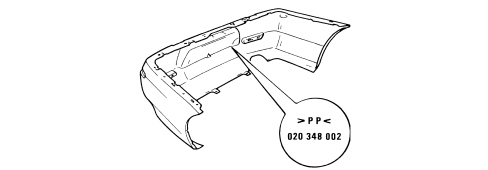
TYPICAL BODYSHELL MEASUREMENTS
Adjustment of moving parts
Measurements for the adjustment of the moving parts
To facilitate and verify mobile part disassembly operations, the existing gaps are shown (in millimetres) to allow appropriate adjustment.
The adjustment procedure is described in the sections describing mobile part removal and refitting procedures.
VIEW OF THE VEHICLE (THREE QUARTERS FRONT) WITH THE POSITION OF THE MEASURING POINTS FOR THE GAPS BETWEEN THE MOVING PARTS

MEASURING POINTS FOR THE GAPS BETWEEN PARTS FROM 1 TO 6
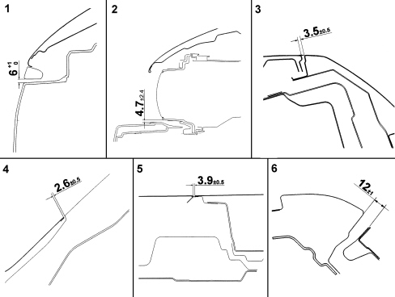
MEASURING POINTS FOR THE GAPS BETWEEN PARTS FROM 7 TO 12

VIEW OF THE VEHICLE (THREE QUARTERS REAR) WITH THE POSITION OF THE MEASURING POINTS FOR THE GAPS BETWEEN THE MOVING PARTS

MEASURING POINTS FOR THE GAPS BETWEEN PARTS FROM 13 TO 18
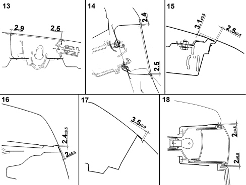
MEASURING POINTS FOR THE GAPS BETWEEN PARTS FROM 19 TO 22

Sealant application
VIEW OF THE VHEICLE WITH SEALANT APPLICATION AREAS ILLUSTRATED

Detail showing sealant application in areas 1 to 6.

Detail showing sealant application in areas 7 to 8 and doors

Typical measurements
Diagram for checking underbody
This chapter shows the specified vehicle dimensions to ensure the best results are achieved when carrying out repair operations.
The comparative dimensions, expressed in millimtres, may be subject to differences (about 2 mm). Repairers must use their experience to decide whether this is due to impact damage or manufacturing tolerances.


Value referring to main point 02 (mm) | Value referring to main point 03 (mm) | ||||||
|---|---|---|---|---|---|---|---|
Ref. | Description | X axis | Y axis | Z axis | X axis | Y axis | Z axis |
01 | Main point | 0,000 | - 624 | 0,000 | - 2847,24 | + 188 | - 190 |
02 | Main point | - | - | - | - 2847,24 | + 812 | - 190 |
03 | Main point | + 2847 | - 812 | + 190 | - | - | - |
04 | Auxiliary point | + 2847,24 | + 188 | + 190 | 0,000 | + 1000 | 0,000 |
05 | Front shock absorber upper fastening RH | - 386 | + 184,5 | + 596 | - 3233,31 | + 996,51 | + 406,1 |
06 | Front shock absorber fastening RH | - 438,5 | + 197,5 | + 603,6 | - 3285,74 | + 1009,33 | + 413,63 |
07 | Front shock absorber fastening RH | - 341,5 | + 215,5 | + 600,3 | - 3188,7 | + 1027,52 | + 410,33 |
08 | Front shock absorber fastening RH | - 363,3 | + 137 | + 582 | - 3210,53 | + 949 | + 392,13 |
09 | Front strut fastening RH and frame | - 902 | + 204 | + 76 | - 3749,24 | + 1016 | - 114 |
10 | Front strut fastening RH and frame | - 832 | + 204 | +76 | - 3679,24 | + 1016 | - 114 |
11 | Front strut fastening RH and frame | + 97 | + 23 | - 33,2 | - 2750,24 | + 835 | - 223,15 |
12 | Front strut fastening RH and frame | - 43 | + 39,2 | + 6 | - 2890,24 | + 851,2 | - 184 |
13 | Front strut fastening RH and frame | - 43 | - 38,8 | + 6 | - 2890,24 | + 773,2 | - 184 |
14 | Front strut fastening LH and frame | - 43 | - 585,2 | + 6 | - 2890,24 | + 226,8 | - 184 |
15 | Front strut fastening LH and frame | - 43 | - 663,2 | + 6 | - 2890,24 | + 148,8 | - 184 |
16 | Front strut fastening LH and frame | + 97 | - 647 | - 33,2 | - 2750,24 | + 165 | - 223,15 |
17 | Front strut fastening LH and frame | - 902 | - 828 | + 76 | - 3749,24 | - 16 | - 114 |
18 | Front strut fastening LH and frame | - 832 | - 828 | + 76 | - 3679,24 | - 16 | - 114 |
19 | Front shock absorber upper fastening LH | - 386,1 | - 808,5 | + 596,1 | - 3233,31 | + 3,49 | + 406,1 |
20 | Front shock absorber fastening LH | - 341,5 | - 779,2 | + 585 | - 3188,7 | + 32,76 | + 394,98 |
21 | Front shock absorber fastening LH | - 363,3 | - 857 | + 606,5 | - 3210,53 | - 44,9 | + 416,53 |
22 | Front shock absorber fastening LH | - 438,5 | - 793,6 | + 596,6 | - 3285,74 | + 18,37 | + 406,58 |
23 | Right side engine support | - 737 | + 202 | + 342,6 | - 3584,24 | + 1014 | + 152,56 |
24 | Right side engine support | - 737 | + 166 | + 342,6 | - 3584,24 | + 978 | + 152,56 |
25 | Right side engine support | - 642 | + 253,75 | + 435,87 | - 3489,24 | + 1065,75 | + 245,88 |
26 | Right side engine support | - 574 | + 180,75 | + 342,56 | - 3421,24 | + 992,75 | + 152,56 |
27 | Left side gearbox support | - 661 | - 763,85 | + 366 | - 3508,24 | + 48,15 | + 176 |
28 | Left side gearbox support | - 519 | - 763,85 | + 372 | - 3366,24 | + 48,15 | + 182 |
29 | Left side gearbox support | - 656,3 | - 763,85 | + 295 | - 3503,54 | + 48,15 | + 105 |
30 | Left side gearbox support | - 519 | - 763,85 | + 293 | - 3366,24 | + 48,15 | + 103 |
31 | Right side front crash box crossmember fastening | - 1014,5 | + 131 | + 314 | - 3861,74 | + 943 | + 124 |
32 | Right side front crash box crossmember fastening | - 1014,5 | + 247 | + 294 | - 3861,74 | + 1059 | + 104 |
33 | Right side front crash box crossmember fastening | - 1014,5 | + 236 | + 154 | - 3861,74 | + 1048 | - 36 |
34 | Right side front crash box crossmember fastening | - 1014,5 | + 138 | + 154 | - 3861,74 | + 950 | - 36 |
35 | Left side front crash box crossmember fastening | - 1014,5 | - 755 | + 314 | - 3861,74 | + 57 | + 124 |
36 | Left side front crash box crossmember fastening | - 1014,5 | - 871 | + 294 | - 3861,74 | - 59 | + 104 |
37 | Left side front crash box crossmember fastening | - 1014,5 | - 860 | + 154 | - 3861,74 | - 48 | - 36 |
38 | Left side front crash box crossmember fastening | - 1014,5 | - 762 | + 154 | - 3861,74 | + 50 | - 36 |
39 | Right side fuel tank fastening | + 1427 | - 107 | + 100 | - 1420,24 | + 705 | - 90 |
40 | Right side fuel tank fastening | + 2097 | - 52 | + 212 | - 750,24 | + 760 | + 22 |
41 | Left side fuel tank fastening | + 1427 | - 517 | + 100 | - 1420,24 | + 295 | - 90 |
42 | Left side fuel tank fastening | + 2097 | - 572 | + 212 | - 750,24 | + 240 | + 22 |
43 | Rear suspension attachment RH | + 1634,5 | + 325 | + 39 | - 1212,74 | + 1137 | - 151 |
44 | Rear suspension attachment RH | + 1705 | + 191 | + 39 | - 1142,24 | + 1003 | - 151 |
45 | Rear suspension attachment RH | + 1835 | + 337 | + 39 | - 1012,24 | + 1149 | - 151 |
46 | Rear suspension attachment RH | + 2113,66 | + 239,77 | + 382,55 | - 733,58 | + 1051,77 | + 192,55 |
47 | Rear suspension attachment RH | + 2152 | + 150,5 | + 165,45 | - 695,24 | + 962,5 | - 24,55 |
48 | Rear suspension attachment RH | + 2483 | + 182,5 | + 188,2 | - 364,24 | + 994,5 | - 1,8 |
49 | Rear suspension attachment LH | + 1634,5 | - 949 | + 39 | - 1212,74 | - 137 | - 151 |
50 | Rear suspension attachment LH | + 1705 | - 815 | + 39 | - 1142,24 | - 3 | - 151 |
51 | Rear suspension attachment LH | + 1835 | - 961 | + 39 | - 1012,24 | - 149 | - 151 |
52 | Rear suspension attachment LH | + 2113,66 | - 863,77 | + 382,55 | - 733,58 | - 51,77 | + 192,55 |
53 | Rear suspension attachment LH | + 2152 | - 774,5 | + 165,45 | - 695,24 | + 37,5 | - 24,55 |
54 | Rear suspension attachment LH | + 2483 | - 806,5 | + 188,2 | - 364,24 | + 5,5 | - 1,8 |
55 | Rear crash box crossmember fastening RH | + 3002,2 | + 207,5 | + 226,4 | + 154,92 | + 1019,5 | + 36,44 |
56 | Rear crash box crossmember fastening RH | + 3002,2 | + 157,5 | + 205,4 | + 154,92 | + 969,5 | + 15,44 |
57 | Rear crash box crossmember fastening LH | + 3002,96 | - 781,5 | + 205,4 | + 155,72 | + 30,5 | + 15,44 |
58 | Rear crash box crossmember fastening LH | + 3002,96 | - 831,5 | + 226,4 | + 155,72 | - 19,5 | + 15,44 |